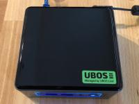
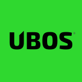

The Indie Box Project has given birth to:
1. UBOSbox:

a commercially supported Home Server.
2. a Linux distro dedicated to this vision:

It implements the Indie Box vision on a variety of hardware,
from PCs to Raspberry Pi's and other little devices.
Please visit us there.